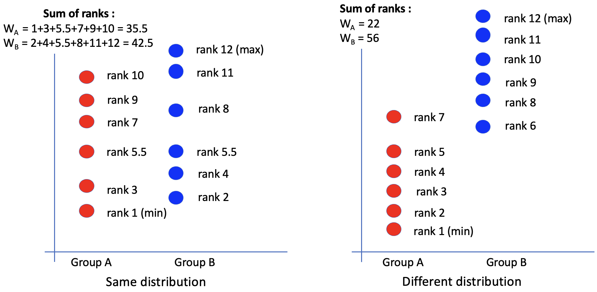
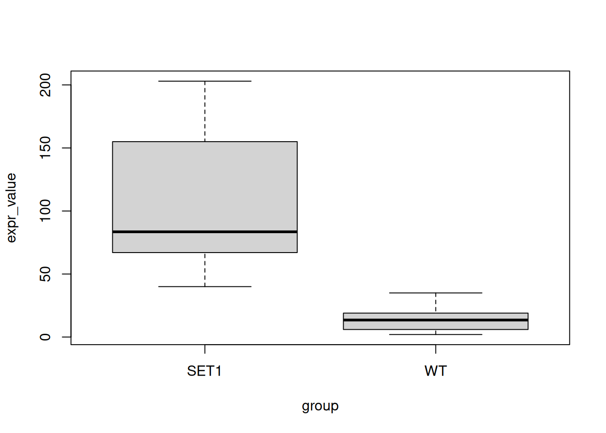

expr_data <- read.table(
file = "../exos_data/read-counts.csv", # replace the path with your own
header = TRUE, sep = ",", row.names = 1
)Week 3 - Hands-On Examples
week03
exercise
The R script is available here: link
Goals
- Work with data frames and lists
- Calculate fold change of gene expression between groups
- Compare gene expression using the Wilcoxon test
- Visualize differences with boxplots
Data Frames
Use the following code to import the file “read-counts.csv” (you have already downloaded it for the hand-on examples of week01). Name the imported data expr_data.
- Check the structure of
expr_datausing an appropriate R function.
str(expr_data)'data.frame': 45 obs. of 40 variables:
$ WT.1 : num 20648 7867 1481 743 185 ...
$ WT.2 : num 466 147 37 27 6 16 0 105 8 490 ...
$ WT.3 : num 1783 427 187 370 200 ...
$ WT.4 : num 25335 5178 1856 4050 669 ...
$ WT.5 : num 64252 27889 3952 877 166 ...
$ WT.6 : num 24126 8547 1020 357 68 ...
$ WT.7 : num 9067 3432 484 845 360 ...
$ WT.8 : num 19721 6935 1409 2110 595 ...
$ WT.9 : num 67353 34229 4636 1872 438 ...
$ WT.10 : num 28059 13913 1870 684 204 ...
$ SET1.1 : num 21214 9807 1604 1075 209 ...
$ SET1.2 : num 3822 1663 572 1170 381 ...
$ SET1.3 : num 2870 932 358 1692 588 ...
$ SET1.4 : num 65483 31023 7322 10529 1067 ...
$ SET1.5 : num 39073 30668 3479 753 125 ...
$ SET1.6 : num 17421 9701 1241 344 93 ...
$ SET1.7 : num 5979 2484 518 1424 490 ...
$ SET1.8 : num 29570 12998 3122 5552 1251 ...
$ SET1.9 : num 56156 39462 5084 1600 346 ...
$ SET1.10 : num 42195 26192 3027 1120 286 ...
$ SET1.RRP6.1 : num 36236 34296 4480 3040 1155 ...
$ SET1.RRP6.2 : num 1716 1238 677 1190 494 ...
$ SET1.RRP6.3 : num 2137 1672 774 2940 1335 ...
$ SET1.RRP6.4 : num 21731 18206 4335 9383 2193 ...
$ SET1.RRP6.5 : num 43086 53296 6548 4044 906 ...
$ SET1.RRP6.6 : num 33990 35468 3723 1710 402 ...
$ SET1.RRP6.7 : num 12290 12523 1475 593 183 ...
$ SET1.RRP6.8 : num 7170 7099 1101 1093 468 ...
$ SET1.RRP6.9 : num 21650 19932 3824 5620 1940 ...
$ SET1.RRP6.10: num 21870 23810 3677 2878 893 ...
$ RRP6.1 : num 38560 32163 3988 2671 959 ...
$ RRP6.2 : num 4275 1811 941 872 593 ...
$ RRP6.3 : num 2923 1257 541 2966 1210 ...
$ RRP6.4 : num 29292 24615 5292 7584 1664 ...
$ RRP6.5 : num 55453 57599 6436 2714 594 ...
$ RRP6.6 : num 37863 29579 2844 854 275 ...
$ RRP6.7 : num 25900 17696 1931 995 517 ...
$ RRP6.8 : num 21179 14404 2383 5318 1796 ...
$ RRP6.9 : num 43327 40664 6029 4940 1386 ...
$ RRP6.10 : num 77043 79181 9389 4092 1267 ...- How many unique values are in sample WT.2?
- Use
unique()to get the unique values; - then use
length()to check the number of elements.
val_unique <- unique(expr_data[["WT.2"]])
head(val_unique)[1] 466 147 37 27 6 16n_unique <- length(val_unique)
n_unique[1] 33# all in one line
length(unique(expr_data[["WT.2"]]))[1] 33- Extract expression levels for the gene “LOH1” in WT samples (WT.1, WT.2, …, WT.10) and SET1 samples (SET1.1, SET1.2, …, SET1.10). Store them as
expr_wtandexpr_set1. Ensure they are vectors usingunlist(). (see help with?unlist)
expr_wt <- expr_data["LOH1", paste0("WT.", 1:10)]
expr_set1 <- expr_data["LOH1", paste0("SET1.", 1:10)]
# check data structure
str(expr_wt)'data.frame': 1 obs. of 10 variables:
$ WT.1 : num 10
$ WT.2 : num 2
$ WT.3 : num 14
$ WT.4 : num 19
$ WT.5 : num 35
$ WT.6 : num 17
$ WT.7 : num 6
$ WT.8 : num 3
$ WT.9 : num 31
$ WT.10: num 13str(expr_set1)'data.frame': 1 obs. of 10 variables:
$ SET1.1 : num 67
$ SET1.2 : num 49
$ SET1.3 : num 83
$ SET1.4 : num 185
$ SET1.5 : num 203
$ SET1.6 : num 83
$ SET1.7 : num 40
$ SET1.8 : num 84
$ SET1.9 : num 134
$ SET1.10: num 155# convert to vectors
expr_wt <- unlist(expr_wt)
expr_set1 <- unlist(expr_set1)
# check again the structure
str(expr_wt) Named num [1:10] 10 2 14 19 35 17 6 3 31 13
- attr(*, "names")= chr [1:10] "WT.1" "WT.2" "WT.3" "WT.4" ...str(expr_set1) Named num [1:10] 67 49 83 185 203 83 40 84 134 155
- attr(*, "names")= chr [1:10] "SET1.1" "SET1.2" "SET1.3" "SET1.4" ...
Stats Time!
Fold change
Fold change (FC) measures the relative change in gene expression between two conditions or groups. (e.g., treated vs. untreated, healthy vs. diseased). \[ FC = \frac{Mean Expression in Group 2}{Mean Expression in Group 1} \]
It’s common to log2 transform the fold change :
\[ \begin{aligned} \text{FC} &= 1, \quad \log_2(\text{FC}) = 0 \Rightarrow \text{No change}\\ \text{FC} &= 2, \quad \log_2(\text{FC}) = 1 \Rightarrow \text{Up-regulated} \\ \text{FC} &= 0.5, \quad \log_2(\text{FC}) = -1 \Rightarrow \text{Down-regulated} \end{aligned} \]
- Calculate the fold change and log2 fold change for “LOH1” between WT and SET1 groups. Is the gene up- or down-regulated?
## Calculate the mean for each group
avg_wt <- mean(expr_wt)
avg_set1 <- mean(expr_set1)
## Get the fold change
fc <- avg_set1 / avg_wt
## log2 transformed fold change
lfc <- log2(fc)
lfc[1] 2.851999
Stats Time!
Mann-Whitney Wilcoxon Rank Sum Test
The Wilcoxon Rank Sum test, also called Mann-Whitney test, is a non-parametric test used to compare independant samples (groups). It does not assume a normal distribution.
This test is particularly useful for ordinal data or when the assumptions of parametric tests (like the t-test) are not met.
The idea is to bring the two groups together and sort all values in order. 
(Figure credit: Lorette Noiret)
The hypotheses are:
- H0: two groups have the same distribution
- H1: two groups have different distribution
If H0 is true, then the ranks should be randomly distributed between the two samples (WA ≃ WB). If H0 is false, then the larger ranks will be in one of the two groups (WA < WB)
So we can make decision based on the sum of ranks in each group.
- Use
wilcox.test()to compare LOH1 expression between WT and SET1. At \(\alpha = 0.05\), what is your conclusion?
wilcox.test(expr_wt, expr_set1)Warning in wilcox.test.default(expr_wt, expr_set1): cannot compute exact
p-value with ties
Wilcoxon rank sum test with continuity correction
data: expr_wt and expr_set1
W = 0, p-value = 0.0001817
alternative hypothesis: true location shift is not equal to 0As the p-value is smaller than 0.05, we can reject the H0. There is a significant difference between two WT and SET1 samples for the expression of the LOH1.
- Create a new data frame for LOH1 gene expression in WT and SET1 samples with two columns:
- “expr_value”: expression levels
- “group”: WT or SET1
expr_loh1 <- data.frame(
expr_value = c(expr_wt, expr_set1),
group = rep(c("WT", "SET1"), each = length(expr_wt))
)
expr_loh1 expr_value group
WT.1 10 WT
WT.2 2 WT
WT.3 14 WT
WT.4 19 WT
WT.5 35 WT
WT.6 17 WT
WT.7 6 WT
WT.8 3 WT
WT.9 31 WT
WT.10 13 WT
SET1.1 67 SET1
SET1.2 49 SET1
SET1.3 83 SET1
SET1.4 185 SET1
SET1.5 203 SET1
SET1.6 83 SET1
SET1.7 40 SET1
SET1.8 84 SET1
SET1.9 134 SET1
SET1.10 155 SET1- With the new data frame, draw a boxplot to compare expression between groups using
boxplot(). (see?boxplot)
boxplot(expr_value ~ group, data = expr_loh1)
Lists
Here’s a toy list storing information about three samples:
my_list <- list(
# sample information
sample_info = data.frame(
id = paste0("sample", 1:3),
age = c(25, 27, 30),
sex = c("F", "M", "F")
),
## expression matrix
count_expr = matrix(
1:6, ncol = 2, dimnames = list(
paste0("sample", 1:3),
paste0("gene", c("A", "B"))
)
),
# mesured genes
gene_name = paste0("gene", c("A", "B")),
# sequenced family members of each sample
family_sequenced = list(
sample1 = c("father", "mother"),
sample2 = c("father", "mother", "sister"),
sample3 = c("mother", "sister")
)
)
my_list$sample_info
id age sex
1 sample1 25 F
2 sample2 27 M
3 sample3 30 F
$count_expr
geneA geneB
sample1 1 4
sample2 2 5
sample3 3 6
$gene_name
[1] "geneA" "geneB"
$family_sequenced
$family_sequenced$sample1
[1] "father" "mother"
$family_sequenced$sample2
[1] "father" "mother" "sister"
$family_sequenced$sample3
[1] "mother" "sister"- Use
names()to extract the names of the elements in the list.
names(my_list)[1] "sample_info" "count_expr" "gene_name" "family_sequenced"- Extract the
count_exprmatrix from the list.
my_list[["count_expr"]] geneA geneB
sample1 1 4
sample2 2 5
sample3 3 6- From the matrix, find the expression value of geneA in sample2
my_list[["count_expr"]]["sample2", "geneA"][1] 2- Calculate the total counts of each gene across all samples.
colSums(my_list[["count_expr"]])geneA geneB
6 15 - From
sample_infodata frame, extract theagecolumn.
my_list[["sample_info"]][["age"]][1] 25 27 30- Extract the 1st sequenced family member of sample3.
my_list[["family_sequenced"]][["sample3"]][1][1] "mother"- Add a new element to the list, “gene_description”, with the following values:
c("geneA" = "housekeeping gene", "geneB" = "stress response gene")
my_list[["gene_description"]] <- c(
"geneA" = "housekeeping gene",
"geneB" = "stress response gene"
)
Bonus!
Check out this cheat sheet for the basic R commands: Base R Cheat Sheet